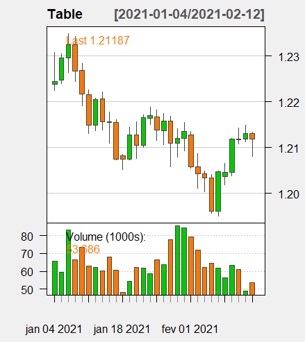
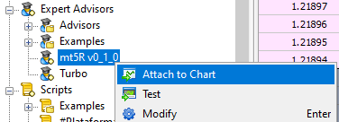
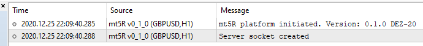

Overview
mt5R is an R package that provides a framework for MT5 users that want to achieve Machine Learning analysis and trading. It provides easy integration with socket connection to reach maximum performance.
Package has 29 functions (check Reference tab):
| Purpose | # functions |
|---|---|
| Trading | 15 |
| Machine Learning | 5 |
| Others | 9 |
Example
This is a basic example to load EURUSD data, using time frame of 5 minutes iTF = 5:
MT5.GetSymbol("EURUSD", iTF = 5, iRows = 5) #> Year Month Day Hour Minute Open High Low Close Volume #> 1 2021 1 8 23 35 1.22195 1.22203 1.22158 1.22168 79 #> 2 2021 1 8 23 40 1.22168 1.22189 1.22158 1.22187 75 #> 3 2021 1 8 23 45 1.22187 1.22212 1.22170 1.22208 89 #> 4 2021 1 8 23 50 1.22212 1.22232 1.22204 1.22215 84 #> 5 2021 1 8 23 55 1.22214 1.22223 1.22156 1.22180 485 ## Using xts package MT5.GetSymbol("EURUSD", iTF = 5, iRows = 5, xts = TRUE) #> Open High Low Close Volume #> 2021-01-08 23:35:00 1.22195 1.22203 1.22158 1.22168 79 #> 2021-01-08 23:40:00 1.22168 1.22189 1.22158 1.22187 75 #> 2021-01-08 23:45:00 1.22187 1.22212 1.22170 1.22208 89 #> 2021-01-08 23:50:00 1.22212 1.22232 1.22204 1.22215 84 #> 2021-01-08 23:55:00 1.22214 1.22223 1.22156 1.22180 485
Plot MT5.GetSymbol output using quantmod package:
library(quantmod) Table = MT5.GetSymbol("EURUSD", iTF = 5, xts = T) quantmod::chartSeries(Table, theme = "white")

Buy 0.001 EURUSD at 1.2206:
MT5.SingleOrder("EURUSD", iCmd = 0, fVol = 0.001, fPrice = 1.2206)
Check open positions:
MT5.ShowPositions() #> sSymbol iCmd fVolume fPrice fStop fGain fProfit iTicket #> 1 EURUSD 0 3 1.22647 0 0 -1395.0 776013 #> 2 Sugar - Cash 1 3 1519.80000 0 0 18.0 776012 #> 3 Bitcoin 0 3 41538.70000 0 0 -4701.3 776011
Looking for more examples? Good! Check Articles tab for more simple examples.
Installation
Assuming that you’re have installed MT5 and successful connected to one broker server. If you don’t have it yet, don’t panic: MT5 is free for most of brokers!
Installation is divided into two parts:
- mt5R in R
- mt5R in MT5
Instructions: Installing mt5R in R
Install the development version from GitHub with:
#install.packages("devtools") devtools::install_github("Kinzel/mt5R@main")
Instructions: Installing mt5R in MT5
To mt5R works you must use the mt5R Expert Advsior in your MT5.
There are two installation options for mt5R in MT5:
-
.ex5: “Plug and play” version. The most suitable version for most. -
.mq5: for developers.
For “Plug and play” version .ex5 (mt5R v0_1_1.ex5)
-
Download
mt5R v0_1_1.ex5. - Move
mt5R v0_1_1.ex5to...\MQL5\experts\folder. To check where MT5’s folders, open MT5 andTools > Options > Storage.
And you’re ready to go!
(If you’re not a developer, go ahed to Getting Started)
Alternatively, for MQL developers you can also download the .mq5 code used to generate mt5R v0_1_1.ex5. Both are exactly the same code, it’s the no compiled version. This is the choice recommend for who want to tailor their own solutions and functions.
- For non compiled version
.mq5(mt5R v0_1_1.mq5) - The most suitable for developers.- Download socket library: socket-library-mt4-mt5.mqh or (Direct Link).
- Move
socket-library-mt4-mt5.mqhto...\MQL5\include\folder. -
Download
mt5R v0_1_1.mq5. - Move
mt5R v0_1_1.mq5code to...\MQL5\experts\folder. - Open MetaEditor (F4).
- Compile
mt5R v0_1_1.mq5. - If everything run smooth an executable program file
mt5R v0_1_1.ex5(or the name you chose) will be generated.
Getting Started
Attach mt5R v0_1_1.ex5 to any chart opened in your MT5, like any other Expert Advisor.

Check your “Expert” tab to this message:

Execute those commands:
If it returns TRUE everything has been successfully installed and you’re ready to use mt5R! Yay!
Creating your own functions
The most awesome part of MT5 is make reliable to create your owns solutions and functions. The cookbook is still under construction, but you can start checking functions MT5.zExample in mt5R package and Z1 order in mt5R v0_1_1.mq5. Its pretty easy!
## Execute the function without () to see its code mt5R::MT5.zExample
Contributing
If you want to contribute to mt5R send me an email (guikinzel@gmail.com) with your GitHub account.
Credits
- JC without his awesome socket library mt5R would not be possible!